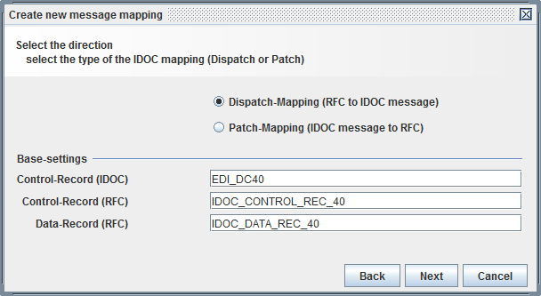
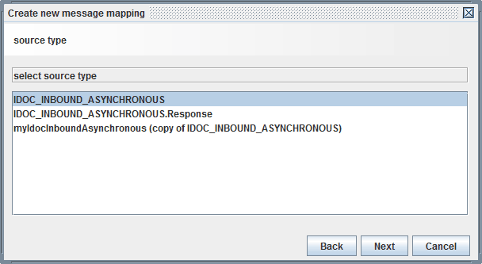
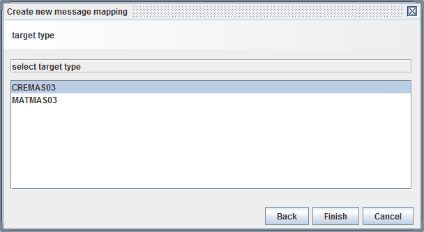
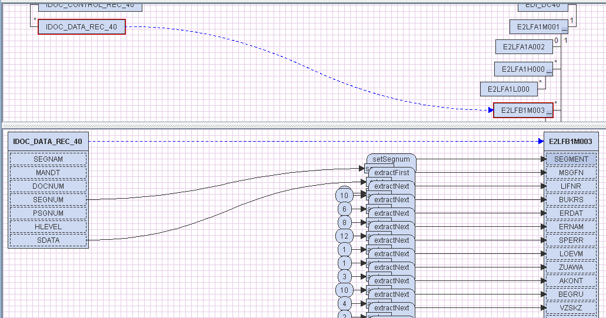

IDOC mapping

Topic content
Concept
An IDOC mapping is a graphical mapping generated automatically when in the Creation dialog the Type IDOC mapping is selected.
It is used to perform the transformation of the parameters delivered from the SAP RFC Receiver channel when the SAP-System invokes an RFC (remote function call) named IDOC_INBOUND_ASYNCHRONOUS. This RFC transfers the segments of an IDOC and the IDOC mapping is responsible to transmit it to the structure of the according IDOC.
Vice versa a is also used to invoke the RFC IDOC_INBOUND_ASYNCHRONOUS from Orchestra and send an IDOC to SAP using the SAP RFC Caller. In this case an IDOC mapping is responsible to translate the IDOC structure to a set of segments which form the parameters of IDOC_INBOUND_ASYNCHRONOUS.
Creation
IDOC mappings are created using a wizard. The wizard relies on information contained in message types representing an IDOC structure. Therefore, as a prerequisite to create an you have to import message types from SAP.
See Import IDOC type from SAP and Import RFC types from SAP in the chapter about Message types.
Now you can start the mapping creation wizard. First of all select the group message mappings in the tree of scenario elements and click on the right mouse button. Then a popup menu opens where you select the item .
A dialog opens where you must enter the name and optionally a description of the new mapping.

enter the name of mapping
Then click on the button .
In the next dialog you select the type IDOC mapping and click on the button .
select the type IDOC mapping
In the next step you have to select the IDOC mapping type commit your selection with next.

There are two types named Dispatch mapping and Patch mapping. A Dispatch mapping translates parameters of an IDOC_INBOUND_ASYNCHRONOUS RFC to a IDOC structure. A Patch mapping does the reverse translation, transforming an IDOC structure to a set of segments which form the parameters of IDOC_INBOUND_ASYNCHRONOUS.
In the next dialog you select the source type of the mapping which in case of a Dispatch mapping is the structure of the RFC IDOC_INBOUND_ASYNCHRONOUS and in case of a Patch mapping is the structure of the IDOC you want to send.

Finally you have to select the target type of the mapping which in case of a Dispatch mapping is the structure of the IDOC you want to create and in case of a Patch mapping the structure of the RFC IDOC_INBOUND_ASYNCHRONOUS you want to invoke.

After you click on the button Finish the mapping is created.
Configuration
Normally it is not necessary to configure or change an IDOC mapping.
If you really need to change it, you may do this in the same way than any other graphical mapping because actually it is a graphical Orchestra mapping.
The following picture shows a node mapping of an IDOC Dispatch mapping creating a IDOC structure of type CREMAS03.

As you can see, the mapping heavily uses offsets to cut slices from the SDATA field of an SEGMENT record and map this slices to the fields of the output record. This information is added to the IDOC message type when it is imported from a SAP system. Therefore the message types used to generate an IDOC mapping are to be imported from a SAP system. You never should change this message types manually.